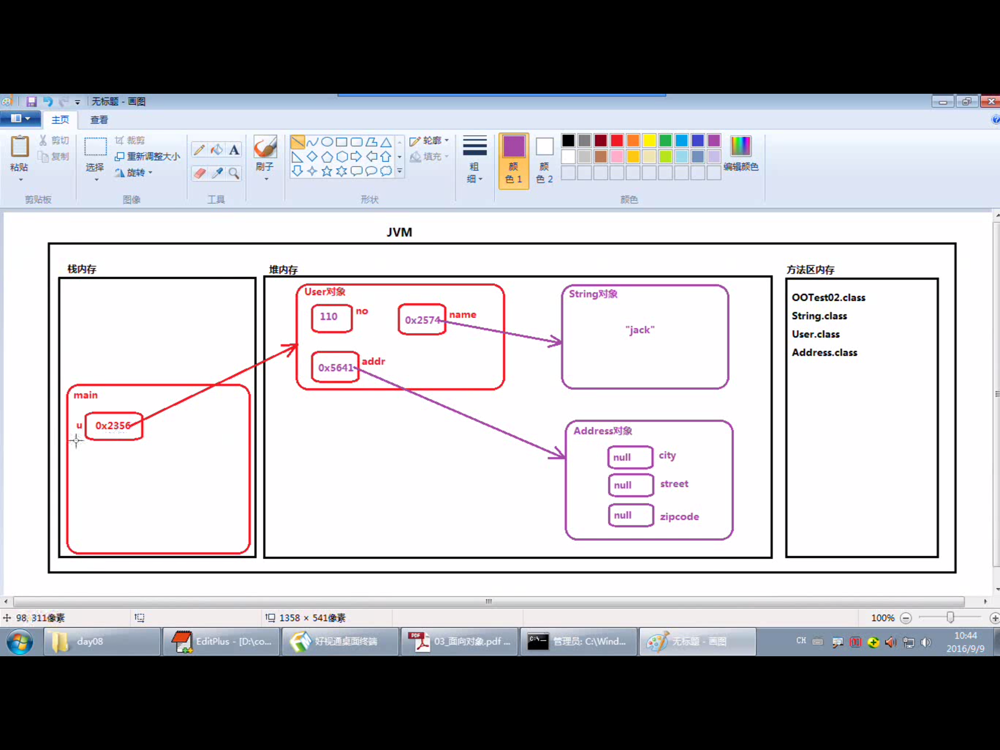

原文出处:本文由博客园博主心悦君兮君不知-睿提供。
原文连接:https://www.cnblogs.com/ruigege0000/p/11582071.html
原文连接:https://www.cnblogs.com/ruigege0000/p/11582071.html
一、内存分析
代码：引用可以是局部变量也可以是成员变量
public class Test1{
public static void main(String[] args){
User u = new User();
u.no = 40;
u.name = "ajflasd ";
u.address = new address();
//name、no都是引用，它们存储的是堆内存中对应实例变量的地址
}
}
二、对象之间建立关系
public class D34_husband_and_wife{
public static void main(String[] args){
Husband huangxiaoming = new Husband();
Wife baby = new Wife();
huangxiaoming.name = "huangxiaoming";
baby.name = "baby";
//上面的例子其实将两个人割裂开来，没有建立关系
//下面对她们进行建立关系
huangxiaoming.w = baby;
baby.h = huangxiaoming;
}
}
class Wife {
String name;
Husband h;
}
class Husband {
String name;
Wife w;
}
二、源码：
D34_husband_and_wife.java
地址：
https://github.com/ruigege66/Java/blob/master/D34_husband_and_wife.java
2.CSDN：https://blog.csdn.net/weixin_44630050（心悦君兮君不知-睿）
3.博客园：https://www.cnblogs.com/ruigege0000/
4.欢迎关注微信公众号：傅里叶变换，个人公众号，仅用于学习交流，后台回复”礼包“，获取大数据学习资料